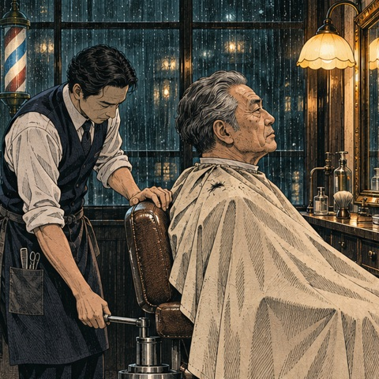
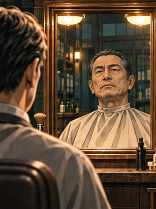
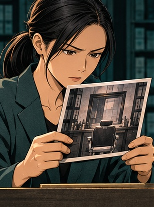
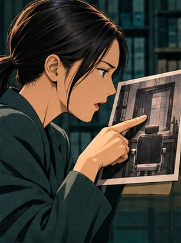
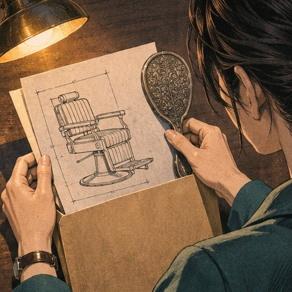
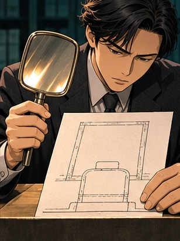
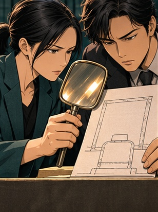
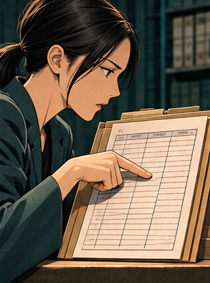
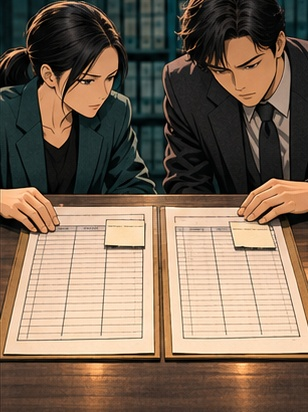

漫画版
第十一話「鏡の中の八時二十分」
資料室・次の事件記録
宝石店に続いて、床屋の事件です。まず沢村さんの証言から。
沢村さんは、椅子に座ったまま時計を見たそうです。
事件当夜。沢村は理髪椅子に腰を下ろした。


事件当夜・沢村の証言
八時二十分でした。首は動かしていません。
1 / 4
八時二十分なら、本郷を含めて時間が空く人はいません。

待って。この椅子、どこを向いてる？

椅子の正面には鏡。沢村さんは振り向いていません。
2 / 4
背後の壁時計 → 正面の鏡 → 椅子に座った沢村
沢村の視線 椅子から正面の鏡へ

時計があるのは椅子の後ろ。正面を向いたままなら、見えたのは鏡の中ね。
朝倉は小さな鏡を取り出し、針がどう見えるか試した。


じゃあ、針を左右に返すと……。
鏡越しに見えた針
針の向きを左右に戻す

長針が四から八へ。短針も返すと……三時四十分！
3 / 4
8:20
空白のある人はいない
3:40
本郷だけ空白

当夜の記録で、午前三時四十分にアリバイが空くのは本郷だけ。
当時の担当者も午前三時四十分に直しています。訂正票がありました。

訂正票は二件とも直ってる。配られた資料にも、この時刻が載ってる？
4 / 4